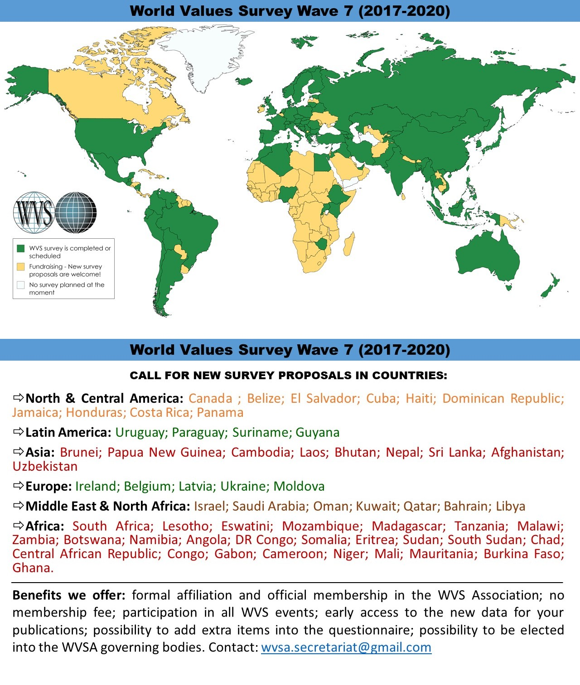
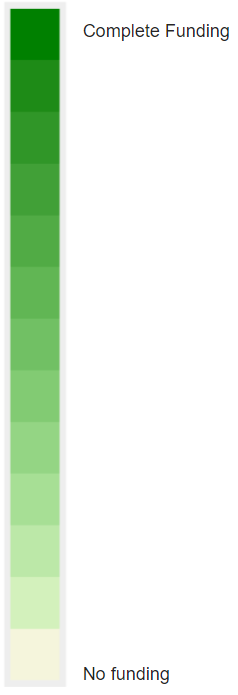
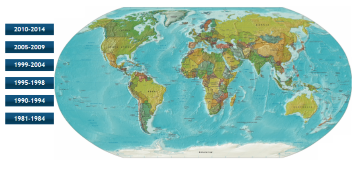
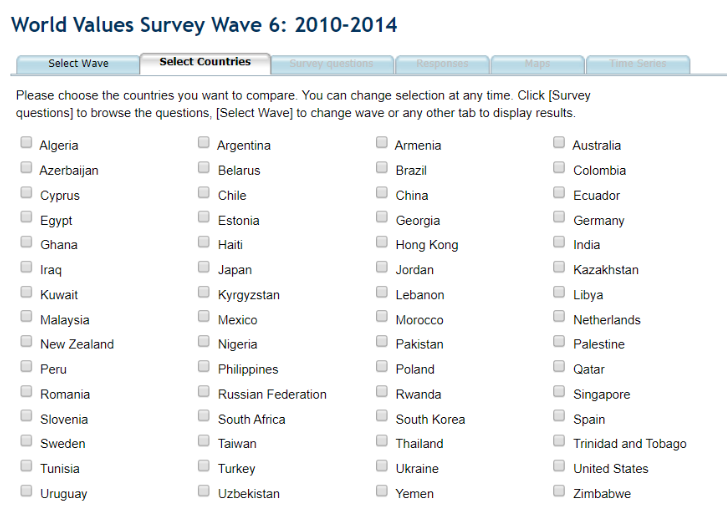
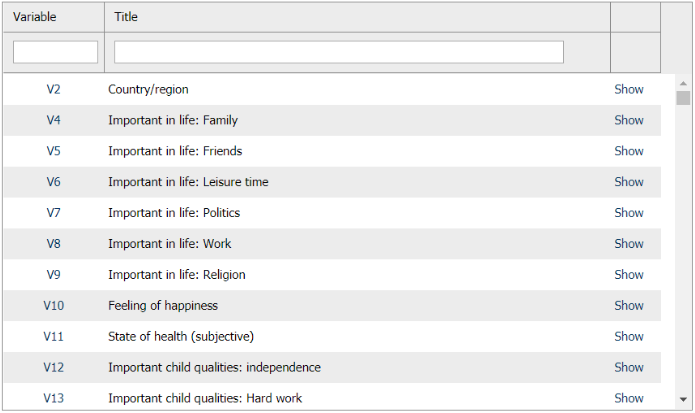
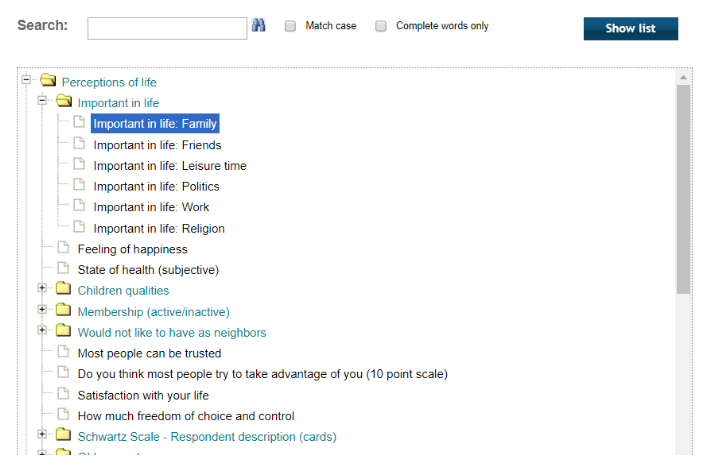
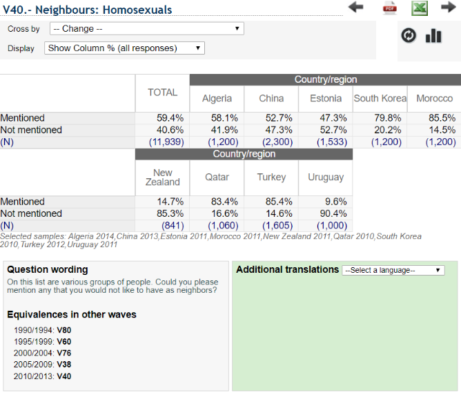
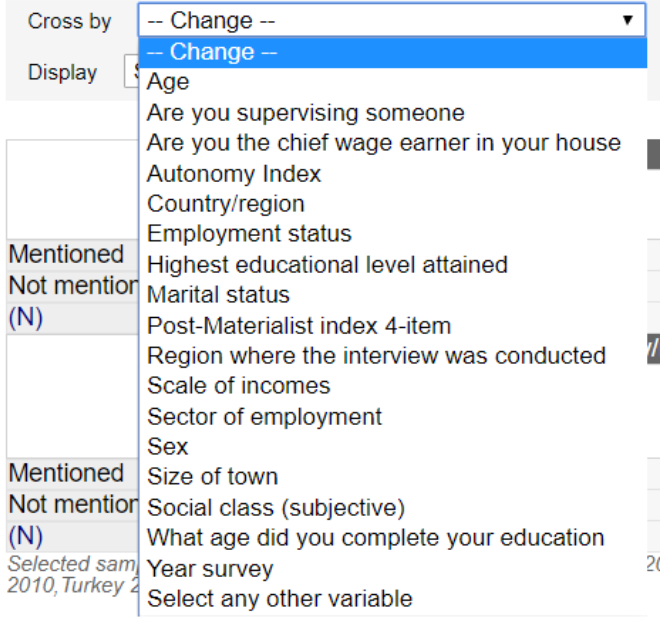

The middle infographic of the homepage (http://www.worldvaluessurvey.org/wvs.jsp) is confusing because both the proposals and the geospatial map uses similar colors to delineate different things.

I find that having both countries in need of funding and countries in North & Central America as a similar Yellow.
The data only has three dimensions: country, funding status, proposal status. What if I want to know which countries need donations the most? Funding status is only [N/A, in progress, and done]. I believe a scale would be more informative.

I would merge the two into a single interactive geospatial visualization. Give the overview of the globe with funding status’ visible on a scale, and allow zooming and highlighting to see proposal status.
It is unclear to me why there is a map here. It is not interactive, and I fail to see how ranges of years relate to this planet.

Selecting a wave brings me to an interface that is designed to imply that selecting a wave was the first step of a process and now I am on the second. Yet, they have changed the entire view and interface. Instead of hoverable buttons and a map, now I am dealing with countries without a map. Also, it is tedious to select countries.

Onto selecting survey questions: I feel there is a lot of wasted space involved. What does “Variable” mean? Is there any ordering?
 
Hierarchical data ought to have a hierarchical visualization. In the table, question V40 is “Neighbors: Homosexuals.” In the tree, Homosexuals falls under “Would not like to have as Neighbors”. Why is this the backup? Why change the interface again? Now I click “Show” in the table or the title of a question in the tree instead of a button.
 
“Mentioned” or “Not Mentioned” means nothing. I’d expect to see these countries opinions on homosexual neighbors. I don’t know what "Cross by" means or where the fields came from.
The bar graph icon leads the user to several different visualizations that help a lot. It took a surprising number of clicks and pages to get to this point though. I’d love to see an interface that integrates all these tabs into one screen.